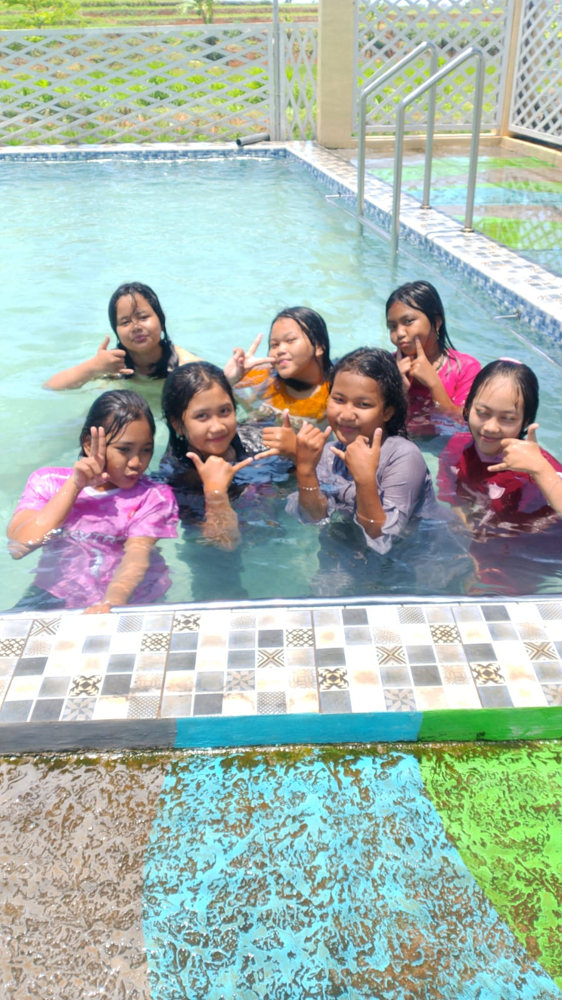

Yayasan Pendidikan Islam Nurul Huda ( YAPIN )
Yakin - Akuntabel - Profesional - Integritas - Niat Lillah
Beranda
Profil ▼
Visi & Misi
Struktur Organisasi
ADART
Presentasi
Program & Kegiatan ▼
Tujuan Utama Yayasan
Rencana Program Pendidikan Formal (Jenjang, Target & Output)
Fase-Program
Rencana Kerja (Tahapan Pengembangan)
Kegiatan Yayasan
Galeri
Kontak & Donasi
Laporan Keuangan ▼
Laporan Kas Masuk/Keluar
Laporan Keuangan & LPJ OKtober 2025
Donatur YAPIN ▼
Lihat Daftar Donatur
List Donatur Excel
Doa-Untuk-Donatur
Galeri Kegiatan Yayasan

Kegiatan Renang
Belajar Madin
Jamaah Selesai Madin
Kegiatan Pak Redi
Yi Modin Ngajar
Ziarah di Kiringan
×
❮
❯
💬 Chat via WA
✉️ Kirim Email